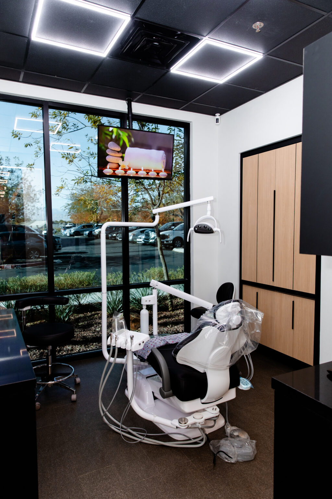
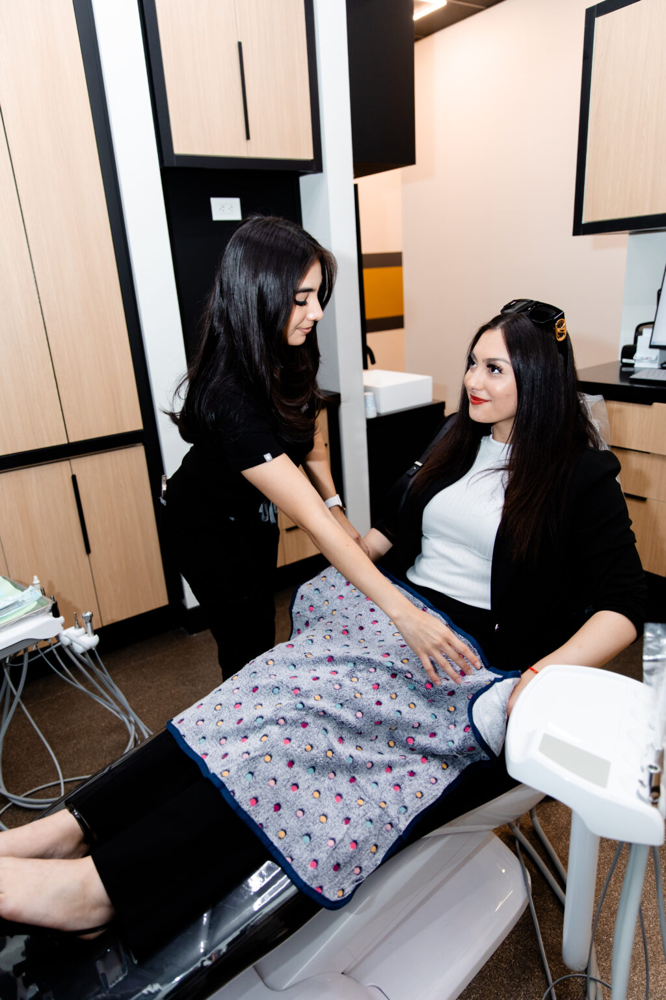
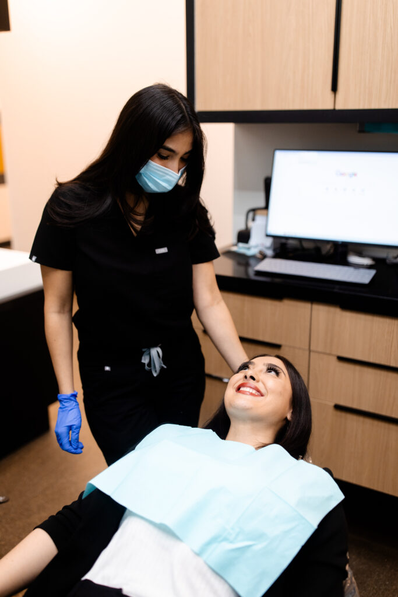
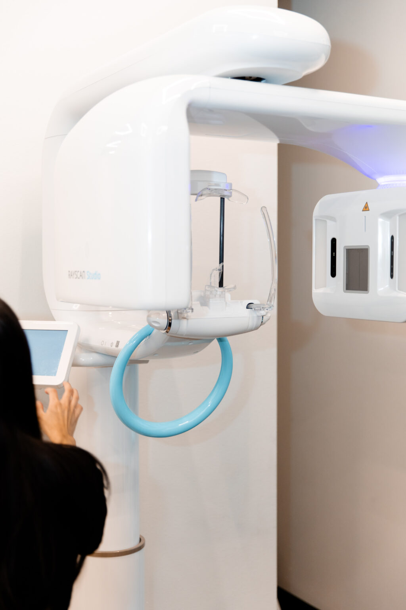
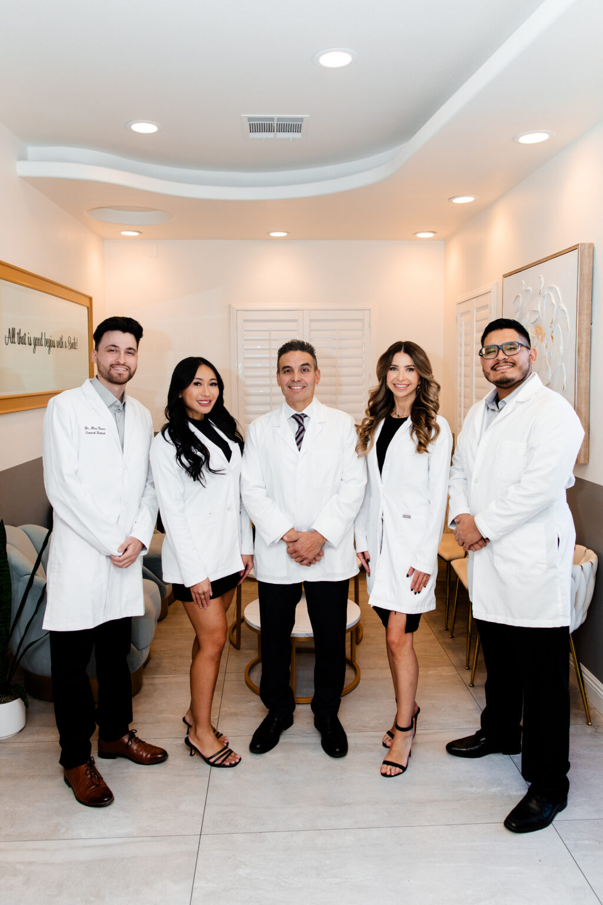

<style>
/* ============================================================================
   T-FEATURE - CONCEPT B - "THE PATIENT'S ARC"  (body fragment, no chrome)
   ----------------------------------------------------------------------------
   TOKEN PURITY: zero hex literals. Every colour / radius / shadow / duration /
   space value below is a var(--ds-*) from radiantsmiles-tokens.css, or a --tf-*
   alias derived from one. Nothing here re-declares a --ds-* token.

   The --tf-* aliases exist for three jobs the foundation sheet does not own:
     1. the section rhythm this template layers on top of .rs-sec,
     2. the DESKTOP-FIRST grid shapes (base = the wide composition; every
        narrowing is an ADDITIVE @media (max-width:N) step-down),
     3. the A2 "circle up" arc seam expressed WITHOUT an extra DOM node, so the
        forced grammar (section > .container > .row > .col > OBJECT) is never
        broken by a decorative divider element.
   ============================================================================ */
:root{
  --tf-pad:clamp(var(--ds-space-xl),8vw,var(--ds-space-2xl));
  --tf-arc-h:clamp(36px,4.5vw,64px);
}

/* --- G-DOM grammar: the full-bleed container variant --------------------- */
/* The locked foundation sheet declares .container / .row / .col as deliberately
   inert layout pass-throughs (radiantsmiles-structural.css:911-913) but never
   declared the .container--full modifier that the same grammar sanctions for a
   full-bleed band. The proof band below referenced it, so the class resolved to
   nothing in any linked sheet and verify-no-orphan-classes was right to flag it.
   Declared here inert, matching the locked primitives exactly, so the modifier
   means something and the band does not silently depend on being unstyled. */
.container--full{width:100%;}

/* --- rhythm ------------------------------------------------------------- */
.tf-air{padding-bottom:calc(var(--tf-pad) + var(--ds-space-xl));}

/* A2 arc seam. The section carries its OWN dome and is pulled up over the band
   above it, so the two grounds meet on a curve instead of a rectangle edge.
   DIVIDER-PATTERNS.md wave-smooth built the CSS-only way, spent exactly twice:
   once on section 2 over the hero, and once on section 4, the dark procedure
   band, where a light band above and a dark ground below finally give the dome
   two different colours to sit between. It used to sit on section 6, joining
   --ds-bg-band to --ds-bg-surface, which are 1.03 to 1 apart and drew nothing. */
.tf-arc{
  position:relative;
  z-index:var(--ds-z-raised);
  margin-top:calc(-1 * var(--tf-arc-h));
  padding-top:calc(var(--tf-pad) + var(--tf-arc-h));
  border-radius:50% 50% 0 0 / var(--tf-arc-h) var(--tf-arc-h) 0 0;
}

/* --- the row shapes (DESKTOP BASE) -------------------------------------- */
.tf-row{display:grid;gap:var(--ds-space-xl);grid-template-columns:minmax(0,1fr);}
.tf-row--split{grid-template-columns:minmax(0,.94fr) minmax(0,1.06fr);align-items:center;}
.tf-row--read{grid-template-columns:minmax(0,1fr) minmax(0,.72fr);align-items:start;}
.tf-row--media{grid-template-columns:minmax(0,.82fr) minmax(0,1.18fr);align-items:stretch;gap:var(--ds-space-lg);}
.tf-row--say{grid-template-columns:minmax(0,1.08fr) minmax(0,.92fr);align-items:center;}
.tf-row--plain{gap:var(--ds-space-lg);}

/* THE WIDTH ANCHOR. A frame that carries BOTH aspect-ratio and max-height has an
   AUTO inline size, so the browser shrinks its used WIDTH to keep the ratio once
   max-height bites, and the frame stops filling its column (measured: a full-bleed
   band came out 1070px wide inside a 1440px column). Making the width DEFINITE
   fixes it at every one of these sites: the ratio then governs the height only,
   and object-fit:cover does the cropping. */
.tf-hero__media .rs-frame,
.tf-figure .rs-frame,
.tf-mediacol .rs-frame,
.tf-anchor__media .rs-frame{width:100%;}

/* --- 1 . hero ----------------------------------------------------------- */
.tf-hero__copy{display:flex;flex-direction:column;gap:var(--ds-space-md);align-items:flex-start;}
.tf-hero__media .rs-frame{aspect-ratio:4 / 5;max-height:560px;}

/* --- 2 . the patient's beat (the page's editorial weight) ---------------- */
.tf-read{max-width:34em;display:flex;flex-direction:column;gap:var(--ds-space-md);}
.tf-say{
  font-family:var(--ds-font-display);
  font-size:clamp(23px,2.7vw,32px);
  line-height:1.32;
  letter-spacing:-.012em;
  font-weight:600;
  color:var(--ds-ink-heading);
}
/* the published-data paragraph is set APART from the patient-voice paragraphs
   rather than rewritten: same words, its own ground and its own rule. */
.tf-cite{
  margin-top:var(--ds-space-md);
  padding:var(--ds-space-md) var(--ds-space-md) var(--ds-space-md) var(--ds-space-lg);
  border-left:3px solid var(--ds-signature);
  border-radius:0 var(--ds-r-surface) var(--ds-r-surface) 0;
  background:linear-gradient(90deg,var(--ds-bg-band),transparent 78%);
}
.tf-figure{position:relative;margin:0 0 var(--ds-space-lg) 0;}
.tf-figure .rs-frame{aspect-ratio:4 / 5;max-height:620px;}
/* SURFACE-PATTERNS circle mask, spent ONCE on this page, on the beat the whole
   concept is built around. Overlap is VERTICAL only so nothing can escape the
   container at any width. */
.tf-figure__medal{
  position:absolute;
  right:var(--ds-space-md);
  bottom:calc(-1 * var(--ds-space-lg));
  z-index:var(--ds-z-raised);
}

/* --- 3 . the three pillars (chrome-free, editorial) ---------------------- */
.tf-pillars{display:grid;gap:var(--ds-space-xl);grid-template-columns:repeat(3,minmax(0,1fr));}
.tf-pillar{
  position:relative;
  display:flex;
  flex-direction:column;
  gap:var(--ds-space-sm);
  padding-top:var(--ds-space-md);
  border-top:1px solid var(--ds-line);
}
/* the one place the accent is spent on this ground. --ds-accent measures 1.36:1
   on the canvas, so it carries the mandated deep-teal keyline or it is a ghost. */
.tf-pillar::before{
  content:"";
  position:absolute;
  top:-1px;
  left:0;
  width:var(--ds-space-lg);
  height:4px;
  border-radius:var(--ds-r-pill);
  background:var(--ds-accent);
  box-shadow:var(--ds-accent-keyline);
}

/* --- 4 . the capability ladder (MEDIA + CARDS law) ----------------------
   This band is grounded .surface-dark, the FIRST of the two anchor beats the
   locked structural sheet budgets. Nothing below is re-declared for it: the
   sheet's own --rs-* aliases re-point the card ground, the card edge and the
   accent keyline on the flip, which is exactly what the class is for. The one
   value checked by hand was the mono step numeral, which inherits
   --ds-ink-soft and therefore flips with the surface. */
.tf-mediacol{min-width:0;align-self:stretch;}
.tf-mediacol .rs-frame{height:100%;min-height:440px;}
/* align-items:start, deliberately. Step 01 carries four times the prose of step
   02, and an equal-height grid turns that into a tall EMPTY card. Letting each
   card take its own height puts the slack in the ground instead of inside a
   border, which reads composed rather than unfinished. The media column still
   stretches: that is owned by the ROW, not by this grid. */
.tf-steps{display:grid;gap:var(--ds-space-md);grid-template-columns:repeat(2,minmax(0,1fr));align-items:start;}
.tf-steps > .tf-wide{grid-column:1 / -1;}
.tf-step__n{
  font-family:var(--ds-font-mono);
  font-size:15px;
  font-weight:500;
  letter-spacing:.16em;
  line-height:1;
  color:var(--ds-ink-soft);
  font-variant-numeric:tabular-nums;
}

/* --- 5 . the anchoring band (full bleed photograph + pulled-up card) ----- */
.tf-anchor{padding-block:0 var(--tf-pad);}
.tf-anchor__media{margin:0;}
.tf-anchor__media .rs-frame{border-radius:0;aspect-ratio:16 / 7;max-height:52vh;}
.tf-anchor__lift{margin-top:calc(-1 * var(--ds-space-2xl));}
.tf-anchor__card{max-width:44em;}
.tf-figure-line{
  font-family:var(--ds-font-display);
  font-size:clamp(22px,2.6vw,31px);
  line-height:1.3;
  letter-spacing:-.012em;
  font-weight:600;
  color:var(--ds-ink-heading);
  font-variant-numeric:tabular-nums;
}

/* --- 7 . the related-care rail ------------------------------------------ */
.tf-rail{display:flex;flex-wrap:wrap;align-items:center;gap:var(--ds-space-sm) var(--ds-space-md);}
.tf-rail__k{flex:none;font-size:18px;line-height:1.5;font-weight:700;color:var(--ds-ink);}

/* --- 9 . the offer band (the SECOND of the page's two dark anchors) ------ */
.tf-offer{display:grid;gap:var(--ds-space-lg);grid-template-columns:minmax(0,1.15fr) minmax(0,.85fr);align-items:start;}
.tf-offer__acts{margin-top:var(--ds-space-md);}
.tf-offer__terms{
  padding-top:var(--ds-space-md);
  border-top:1px solid var(--ds-line-control);
}

/* --- 8 . the questions -------------------------------------------------- */
.tf-qa{max-width:44em;border-top:1px solid var(--ds-line);}
.tf-qa__item{
  display:flex;
  flex-direction:column;
  gap:var(--ds-space-xs);
  padding-block:var(--ds-space-md);
  border-bottom:1px solid var(--ds-line);
}

/* ============================================================================
   RESPONSIVE - ADDITIVE max-width step-downs ONLY. The base above is the wide
   composition; every rule below narrows it. Shapes held at 1440 / 1200 / 1024 /
   834 / 768 / 375, with no horizontal overflow at any of them.
   ============================================================================ */
@media (max-width:1023px){
  .tf-row--media{grid-template-columns:minmax(0,1fr);}
  .tf-mediacol{align-self:auto;}
  .tf-mediacol .rs-frame{height:auto;min-height:0;aspect-ratio:16 / 10;max-height:46vh;}
}
@media (max-width:899px){
  .tf-row{gap:var(--ds-space-lg);}
  .tf-row--split,
  .tf-row--read,
  .tf-row--say{grid-template-columns:minmax(0,1fr);}
  .tf-pillars{grid-template-columns:repeat(2,minmax(0,1fr));gap:var(--ds-space-lg);}
  .tf-pillar:last-child{grid-column:1 / -1;}
  .tf-offer{grid-template-columns:minmax(0,1fr);}
  .tf-hero__media .rs-frame{aspect-ratio:16 / 10;max-height:44vh;}
  .tf-figure .rs-frame{aspect-ratio:16 / 11;max-height:46vh;}
  .tf-anchor__media .rs-frame{aspect-ratio:4 / 3;max-height:42vh;}
  .tf-anchor__lift{margin-top:calc(-1 * var(--ds-space-xl));}
}
@media (max-width:639px){
  .tf-steps{grid-template-columns:minmax(0,1fr);}
  .tf-pillars{grid-template-columns:minmax(0,1fr);}
  .tf-pillar:last-child{grid-column:auto;}
  .tf-figure__medal{right:var(--ds-space-xs);}
  .tf-cite{padding-left:var(--ds-space-md);}
  .tf-anchor__lift{margin-top:calc(-1 * var(--ds-space-lg));}
}
</style>

<!-- pick: HERO-COMPOSITIONS.md # 2 | considered: # 1,# 7,# 20 | why: concept B opens on the ROOM, not on a claim. The mirror puts a photograph of a real treatment room in the first column, so an anxious reader sees where they would be sitting before they read a word, and the headline lands second. Entry # 1 is the foundation's own default AND carries this menu's explicit overused warning, so taking it on the flagship type would make 38 pages read as a styleguide reprint. Entry # 7 floats stat cards over full-bleed media, but the only figure this page licenses is a single-office review record that must never be lifted out of its scope sentence, and a full-bleed hero would spend the media weight section two is built to carry. Entry # 20 needs a stat column no verified fact can fill. Media is height-capped (4/5 at 560px wide, 16/10 at 44vh on a phone) so the action pair stays above the fold at every width. | rigor: heavy -->
<section class="rs-sec rs-sec--band rs-sec--lead">
  <div class="container">
    <div class="row tf-row tf-row--split">
      <div class="col tf-hero__media">
        <div class="rs-frame rs-frame--hero rs-spot">
          
          <span class="rs-grade rs-grade--soft" aria-hidden="true"></span>
        </div>
      </div>
      <div class="col">
        <div class="tf-hero__copy rs-rise" style="--rs-i:0">
          <h1 class="rs-h1">Dental Implants in Las Vegas</h1>
          <p class="rs-lede">A replacement tooth that stands on its own, with the surgical placement and the restoration both handled by our own team.</p>
          <div class="rs-acts">
            <a class="rs-btn rs-btn--accent" href="contact.html">Book an appointment</a>
            <a class="rs-btn rs-btn--ghost" href="locations.html">Call the office</a>
          </div>
        </div>
      </div>
    </div>
  </div>
</section>

<!-- pick: SECTION-COMPONENTS.md # 7 | considered: # 8,# 6,# 57 | why: this is the beat the whole concept is built on, so it takes the page's real editorial weight: a 34em reading column set at display scale, one strong photograph beside it, and air on all four sides. Entry # 7 is the only atom whose job is naming the pain in the reader's own terms before any capability is offered. Entry # 8 manifesto would recast a published clinical mechanism as a belief, which this brand's honesty fence forbids. Entry # 6 qualifier needs audience segments the copy never draws. Entry # 57 standalone pull-quote would set a sourced mechanism as rhetoric and would strand the coverage paragraph with nowhere to sit. The circle mask is spent here, once, and the arc seam lifts this ground up over the hero so the page's first transition is a curve, not a cut. | rigor: heavy -->
<section class="rs-sec tf-arc tf-air">
  <div class="container">
    <div class="row tf-row tf-row--read">
      <div class="col">
        <div class="tf-read rs-rise" style="--rs-i:0">
          <p class="tf-say">A missing tooth does not stay a single missing tooth. The teeth either side lean towards the gap. The tooth above or below it drifts down into the space.</p>
          <p class="rs-copy">Under the gap, the jawbone stops being loaded when you chew. Bone that is not loaded reduces over time. That is why a gap left alone narrows the options for filling it later.</p>
          <p class="rs-copy">None of this is an emergency, and that is exactly the problem. It is slow, so it waits. The waiting is what makes the eventual fix bigger.</p>
          <div class="tf-cite">
            <p class="rs-copy">The published coverage numbers belong here as well. The ADA Health Policy Institute reports that 55% of adults aged 65 and older have no dental benefits, fetched 30 July 2026. The same source reports that dental visits track coverage directly. In 2023, 53% of adults with private dental insurance had a dental visit, against 16% of adults with no dental insurance.</p>
          </div>
        </div>
      </div>
      <div class="col">
        <figure class="tf-figure rs-rise" style="--rs-i:1">
          <div class="rs-frame">
            
            <span class="rs-grade rs-grade--soft" aria-hidden="true"></span>
          </div>
          <div class="rs-medallion tf-figure__medal">
            
          </div>
        </figure>
      </div>
    </div>
  </div>
</section>

<!-- pick: CARD-VARIATIONS.md # 3 | considered: # 4,# 2 | why: three short benefit sentences do not need three boxes. Entry # 3 is chrome-free by definition, which keeps the card texture unspent until section four actually needs it, and its hairline-and-rule anatomy reads editorial rather than as a tile menu, which is the register this concept argues for. Entry # 4 is the medical default in this catalog but it ends in an arrow link, and no per-pillar destination exists anywhere in the copy, so the arrow would point nowhere. Entry # 2 wants an embedded mini-visual, and no such asset exists on disk; inventing one is barred by the imagery spec. The accent bar above each pillar is the only yellow on this ground and carries the token sheet's mandated deep-teal keyline. | rigor: heavy -->
<section class="rs-sec rs-sec--band">
  <div class="container">
    <div class="row tf-row tf-row--plain">
      <div class="col">
        <div class="tf-pillars">
          <div class="tf-pillar rs-rise" style="--rs-i:0">
            <h2 class="rs-h3">Chew on both sides again.</h2>
            <p class="rs-copy">An implant is anchored in the jaw, so you are not steering food away from one side of your mouth.</p>
          </div>
          <div class="tf-pillar rs-rise" style="--rs-i:1">
            <h2 class="rs-h3">Leave the neighbouring teeth alone.</h2>
            <p class="rs-copy">A bridge is carried by the teeth either side of a gap. An implant stands on its own instead.</p>
          </div>
          <div class="tf-pillar rs-rise" style="--rs-i:2">
            <h2 class="rs-h3">Clean it like a tooth.</h2>
            <p class="rs-copy">The crown on an implant is brushed and flossed where it sits. It does not come out at night.</p>
          </div>
        </div>
      </div>
    </div>
  </div>
</section>

<!-- pick: SECTION-COMPONENTS.md # 11 | considered: # 27,# 12,# 28 | why: five steps and one photograph is exactly the arrangement the media-plus-cards LAW governs, so the media column stretches to the card grid's height with no aspect cap on the wide base, and the cards sit two-by-two with the fifth spanning full, which is the shape the density gate passes. RE-GROUNDED here, composition untouched. The locked structural sheet budgets TWO surface-dark anchor beats, the offer and the closing CTA, and this page had spent only one, because the closing CTA belongs to the chrome and the chrome does not paint it dark. The unspent second beat lands on THIS section for two reasons that hold nowhere else on the page. First, position: the flat-light run this page has to break is seven sections long, and a single dark band splits seven into two runs of three at position four and at no other position, so the capability ladder is the only section that can carry the beat without spending a third band the locked sheet does not budget. Second, subject: this is the beat that is literally about surgery, and its one licensed photograph is the only picture on the page of a machine rather than a person, so a deep ground reads as the clinical register rather than as decoration, and the mono step numerals read as a readout. The photographic anchor at section five is therefore left exactly as this concept argues it, a full-bleed reception band carrying its weight in pixels rather than in paint. This section also takes the second and last use of the arc seam, moved here from the in-house beat where a light dome over a light band measured 1.03 to 1 of ground separation and did no visible work; over this dark ground the same dome is the first place the concept's signature seam is actually legible, and the seam is still spent exactly twice. Entry # 27 as a bare step row would leave this section's only licensed photograph homeless and would read as a generic process strip immediately after section three already ran three columns. Entry # 12 needs a product screenshot, which does not exist for a surgical sequence. Entry # 28's connector line implies fixed durations, and the copy deliberately times nothing except the published up-to-six-months integration window. Steps are numbered because the sequence is clinical and the copy's own first step says first. | rigor: heavy -->
<section class="rs-sec tf-arc surface-dark">
  <div class="container">
    <div class="row tf-row tf-row--media">
      <div class="col tf-mediacol">
        <div class="rs-frame">
          
          <span class="rs-grade rs-grade--tint" aria-hidden="true"></span>
          <span class="rs-grade rs-grade--lift" aria-hidden="true"></span>
        </div>
      </div>
      <div class="col">
        <div class="tf-steps">
          <article class="rs-card rs-rise" style="--rs-i:0">
            <div class="rs-card__body">
              <span class="tf-step__n">01</span>
              <h2 class="rs-card__title">We assess the site first.</h2>
              <p class="rs-card__text">X-rays and impressions are taken to determine the bone, the gum tissue and the spacing available for an implant. You are told what is seen, not handed a plan. Our own bone grafting page publishes that a jawbone that has receded or been significantly damaged cannot support an implant. It publishes that grafting is usually recommended for the restoration, captured 30 July 2026.</p>
            </div>
          </article>
          <article class="rs-card rs-rise" style="--rs-i:1">
            <div class="rs-card__body">
              <span class="tf-step__n">02</span>
              <h2 class="rs-card__title">We place the post.</h2>
              <p class="rs-card__text">A post, usually titanium, is placed in the jaw while the area is numb. This is surgery, and we describe it to you as surgery.</p>
              <!-- SLOT UNFILLED (copy section 4, card 02 visual): "a real photograph of one of our own surgical operatories, set up for a placement." The one operatory photograph separable in assets/ is spent on the hero, where the copy's own image slot names the same subject. NEEDS-OWNER: a second operatory photograph, or a decision on which section keeps the one that exists. No stock and no generated substitute may fill this. -->
            </div>
          </article>
          <article class="rs-card rs-rise" style="--rs-i:2">
            <div class="rs-card__body">
              <span class="tf-step__n">03</span>
              <h2 class="rs-card__title">We wait for it to integrate.</h2>
              <p class="rs-card__text">The post has to join with the bone before it can carry anything. Our own implants page publishes a healing and integration period of up to six months, captured 30 July 2026. That waiting period is part of the treatment, not a delay in it.</p>
              <!-- SLOT UNFILLED (copy section 4, card 03 visual): "a real photograph of the review chair where the site is checked between appointments." No photograph in assets/ can be identified as a review chair without asserting it, so nothing here is captioned as one. NEEDS-OWNER. -->
            </div>
          </article>
          <article class="rs-card rs-rise" style="--rs-i:3">
            <div class="rs-card__body">
              <span class="tf-step__n">04</span>
              <h2 class="rs-card__title">We fit the restoration.</h2>
              <p class="rs-card__text">The artificial tooth is made and fitted to the post, our own implants page says. The same practice that placed the post fits the tooth on top.</p>
              <!-- SLOT UNFILLED (copy section 4, card 04 visual): "a real photograph of one of our own clinicians fitting the artificial tooth, in one of our offices." No photograph in assets/ shows a restoration being fitted, and captioning a general chairside photograph as this procedure would assert a clinical act that was never photographed. NEEDS-OWNER. -->
            </div>
          </article>
          <article class="rs-card tf-wide rs-rise" style="--rs-i:4">
            <div class="rs-card__body">
              <span class="tf-step__n">05</span>
              <h2 class="rs-card__title">We review it afterwards.</h2>
              <p class="rs-card__text">An implant is checked at your regular visits like any other tooth. The practice that placed it is the practice that checks it.</p>
              <!-- SLOT UNFILLED (copy section 4, card 05 visual): "a real photograph of a clinician reviewing an implant at a routine visit in one of our offices." No photograph in assets/ shows an implant review; the two chairside photographs on this page are captioned only as what they plainly are. NEEDS-OWNER. -->
            </div>
          </article>
        </div>
      </div>
    </div>
  </div>
  <!-- BUILD NOTE, NOT VISITOR TEXT (copy section 4 owner flag): the implant system we use is not named in any first-party source. The healing interval and the grafting pathway are published on our own pages and are carried above. Owner to confirm the system before this section ships. -->
</section>

<!-- pick: PROOF-SECTIONS.md # 4 | considered: # 1,# 2,# 3 | why: the only proof this page licenses is ONE figure with ONE scope, so the result-leads-narrative-supports card is the right shape, and the sentence itself is set at display scale rather than having the number lifted out of it, which is what keeps the record and its scope inseparable. The anchoring weight comes from a full-bleed photograph of a real reception desk with the card pulled up over it, and NOT from a near-black band, which is the argument this concept is built on and the reason this section was left light when the look-floor was repaired. The locked structural sheet budgets two surface-dark beats and both are now spent, on the procedure ladder above and on the offer below; a third here would put the page over the sheet's own budget and would also bury the one photograph on the page that shows the practice as a place rather than as a procedure. Coming straight off the dark ladder, a full-bleed photograph on the light band is the bigger contrast anyway, which is the whole point. Entries # 1 and # 3 both need quoted testimonials and not one consented patient quote exists. Entry # 2's dark pull-quote band would take a third dark beat and would still have no quote to carry. | rigor: heavy -->
<section class="rs-sec rs-sec--band tf-anchor">
  <div class="container--full">
    <div class="row">
      <div class="col">
        <figure class="tf-anchor__media">
          <div class="rs-frame">
            
            <span class="rs-grade rs-grade--soft" aria-hidden="true"></span>
          </div>
        </figure>
      </div>
    </div>
    <div class="row">
      <div class="col">
        <div class="rs-wrap tf-anchor__lift">
          <article class="rs-card tf-anchor__card rs-rise" style="--rs-i:0">
            <div class="rs-card__body rs-card__body--roomy">
              <p class="tf-figure-line">Patients at our Lake Mead office have left 506 reviews on Birdeye, averaging 4.5 stars, fetched 30 July 2026.</p>
              <p class="rs-source">That record belongs to that office alone.</p>
            </div>
          </article>
          <!-- BUILD NOTE, NOT VISITOR TEXT (copy section 5 owner flag): confirm whether a practice-wide rating exists, and which platform is the system of record. Per content-bible.md section 6 the scope may never be dropped or aggregated across the seven offices. No before and after image ships here until a real consented patient case is supplied. -->
          <!-- SLOT PARTIALLY FILLED (copy section 5 image slot): "a photograph of the actual office and the actual equipment." The photograph above is the actual office, first-party and unambiguously branded. It does not show equipment. NEEDS-OWNER: an office photograph carrying both, or a decision that the office alone is enough here. -->
        </div>
      </div>
    </div>
  </div>
</section>

<!-- pick: SECTION-COMPONENTS.md # 8 | considered: # 7,# 15,# 16 | why: this beat is a stated position about how implant care should be organised, not a pain and not a comparison, and the left-aligned belief block with a rule above is the atom for exactly that. RE-SEAMED, composition untouched: this section used to open on the arc, but the two grounds it joined were the anchoring band and this one, --ds-bg-band against --ds-bg-surface, which measure 1.03 to 1 apart, so the dome was drawn and never seen. The seam moved up to the procedure band where it has a dark ground to rise out of, and this beat now meets the full-bleed reception photograph on a clean horizontal, which is the correct edge under a photograph that already runs to both margins and needs no second contour arguing with it. Entry # 7 is already spent on section two, and repeating it would flatten two different beats into one shape. Entry # 15's us-versus-them matrix would need columns of claims the copy refuses to make, and the copy names no competitor at all. Entry # 16 founder-bio-split has no founder to show, and per-clinician assignment to this treatment is unpublished, so the photograph is the roster together while the names stay on the team page where their credentials live. | rigor: heavy -->
<section class="rs-sec">
  <div class="container">
    <div class="row tf-row tf-row--say">
      <div class="col">
        <div class="tf-read rs-rise" style="--rs-i:0">
          <p class="tf-say">Where implant treatment is split in two, one practice places the post and another restores it. The patient carries the plan between them. We do both, at seven offices across Las Vegas, North Las Vegas and Henderson.</p>
          <p class="rs-copy">We are one dental group, not a franchise and not a referral network. Where offices are separately owned, a consistent standard between them cannot be promised. Oral surgery and restorative care sit on one clinical roster here.</p>
          <p class="rs-copy">The clinicians on that roster are named, each with the credentials the practice publishes for them. You can read who they are before you book, on <a class="rs-qlink" href="team.html">our team page</a>.</p>
        </div>
      </div>
      <div class="col">
        <figure class="tf-figure rs-rise" style="--rs-i:1">
          <div class="rs-frame">
            
            <span class="rs-grade rs-grade--soft" aria-hidden="true"></span>
          </div>
        </figure>
      </div>
    </div>
  </div>
  <!-- BUILD NOTE, NOT VISITOR TEXT (copy section 6 owner flag): whether patient records and images are held in one system shared by all seven offices is not verified in any first-party capture. No shared-record claim ships on this page until the owner confirms it. -->
</section>

<!-- pick: SECTION-COMPONENTS.md # 45 | considered: # 51,# 40 | why: the copy delivers this beat as two labelled inline lists, and a chip rail is the only atom that keeps each label attached to its own set while giving every destination a real 48px target for a 40-plus reader on a phone. Entry # 51 locations-grid would re-grid the seven offices that the chrome mega-menu and the footer ledger already own in full, duplicating the site's densest component in order to carry four related-care links. Entry # 40 pre-footer-CTA-band is the wrong species entirely: this rail is navigation between treatments, not a second ask, and the page's single closing ask belongs to the chrome. Kept extra-small and on the band ground so it reads as the seam between the argument and the offer. | rigor: heavy -->
<section class="rs-sec rs-sec--band">
  <div class="container">
    <div class="row tf-row tf-row--plain">
      <div class="col">
        <div class="tf-rail">
          <span class="tf-rail__k">Related care:</span>
          <a class="rs-chip" href="restorations.html">Restorations</a>
          <a class="rs-chip" href="composite-fillings.html">Composite fillings</a>
          <a class="rs-chip" href="crowns-caps.html">Crowns and caps</a>
          <a class="rs-chip" href="fixed-bridges.html">Fixed bridges</a>
        </div>
      </div>
      <div class="col">
        <div class="tf-rail">
          <span class="tf-rail__k">Also:</span>
          <a class="rs-chip" href="locations.html">all seven offices</a>
          <a class="rs-chip" href="offer.html">new patient offer</a>
          <a class="rs-chip" href="contact.html">contact</a>
        </div>
      </div>
    </div>
  </div>
</section>

<!-- pick: CTA-PATTERNS.md # 7 | considered: # 11,# 8,# 4 | why: the copy hands this beat a hard ask and a soft alternative, which is precisely the primary-beside-secondary cluster, and putting it on the SECOND of the page's two dark anchors is where this brand's measured offer band has always lived. The two beats now read as a pair with a job each: the first is the procedure and asks nothing, the second is the offer and asks. On dark the accent finally becomes a legal foreground at 8.47:1, so the yellow does the single job it is reserved for and signals the offer, and it is the only place on the page where a yellow FILL appears rather than a yellow keyline. Entry # 11 section-as-button is a closing-CTA shape, and the chrome owns this page's single closing ask; it also wants an accent-filled band, which is forbidden on light and would flatten the difference between this band and the procedure band above. Entry # 8 stacked CTAs would push the phone action below the fold on the wide base for no gain. Entry # 4 phone-pill needs one number, and a seven-office practice has seven, which is why the secondary points at the office list the footer ledger details. This band sits BEFORE the questions on purpose: it is the offer, not the close. | rigor: heavy -->
<section class="rs-sec surface-dark">
  <div class="container">
    <div class="row tf-row tf-row--plain">
      <div class="col">
        <article class="rs-card rs-card--feature rs-rise" style="--rs-i:0">
          <div class="rs-card__body rs-card__body--roomy">
            <div class="tf-offer">
              <div>
                <p class="rs-lede">If you are new to us, start with the $45 exam and X-ray, or $29 if you are a senior. Both prices are published on our own site and were current on 30 July 2026.</p>
                <div class="rs-acts tf-offer__acts">
                  <a class="rs-btn rs-btn--accent" href="contact.html">Book an appointment</a>
                  <a class="rs-btn rs-btn--ghost" href="locations.html">Call the office</a>
                </div>
              </div>
              <div class="tf-offer__terms">
                <p class="rs-source">Payment plans are available through Care Credit, Cherry, Sunbit and Lending Club. Terms are set by the lender and are subject to credit approval. They are not terms offered by this practice.</p>
              </div>
            </div>
          </div>
        </article>
        <!-- BUILD NOTE, NOT VISITOR TEXT (copy section 9 owner placeholder): no expiry, exclusions or senior-age threshold is stated anywhere on the live site. One is required before this offer ships. Nothing was invented to fill it. -->
      </div>
    </div>
  </div>
</section>

<!-- pick: FAQ-ACCORDION.md # 4 | considered: # 1,# 5,# 2 | why: three answers, all short, all compliance-checked, aimed at an anxious 40-plus reader. Hiding them behind a toggle costs more than showing them, which is the exact condition this entry names, and an all-visible hairline list is the calmest possible last beat before the chrome's closing ask. Entry # 1 expand-rows adds interactive state plus a tap the reader must spend to reach a two-sentence answer about whether it hurts. Entry # 5 centred-with-eyebrow needs an eyebrow and a heading, and the copy supplies neither for this section; inventing them is barred. Entry # 2 card-per-question would repeat section four's card texture two sections later and give three short answers more chrome than the offer band above them. Left-aligned at a 44em measure so the line length matches the reading column in section two and the page closes in the voice it opened in. | rigor: heavy -->
<section class="rs-sec">
  <div class="container">
    <div class="row tf-row tf-row--plain">
      <div class="col">
        <div class="tf-qa rs-rise" style="--rs-i:0">
          <div class="tf-qa__item">
            <h2 class="rs-h4">What does an implant cost?</h2>
            <p class="rs-copy">We quote after an examination, because the plan depends on the bone, the site and the tooth being replaced. We do not publish treatment prices on this site.</p>
          </div>
          <div class="tf-qa__item">
            <h2 class="rs-h4">Does insurance cover it?</h2>
            <p class="rs-copy">Coverage depends on your plan. Delta Dental, Cigna, MetLife and the Culinary Health Fund are among the 41 carriers listed on <a class="rs-qlink" href="insurance-financing.html">our insurance and financing page</a>. Network status varies by office and by plan. Contact the office you want with your plan details before you book.</p>
          </div>
          <div class="tf-qa__item">
            <h2 class="rs-h4">Does it hurt?</h2>
            <p class="rs-copy">The post is placed while the area is numb. The site can feel sore afterwards, and we tell you how to manage that before you leave.</p>
          </div>
          <!-- BUILD NOTE, NOT VISITOR TEXT (copy section 8 owner flag): the insurance answer names carriers without stating any relationship with them, per client-rules.json OVERCLAIM.global[5], which records the site-wide network claim as unconfirmed. It offers no coverage check made on your behalf, because that activity is undefined and blocked under content-bible.md section 2, per intake-brief.md section G-6. Confirm the per-office network status before this answer ships. -->
        </div>
      </div>
    </div>
  </div>
</section>
